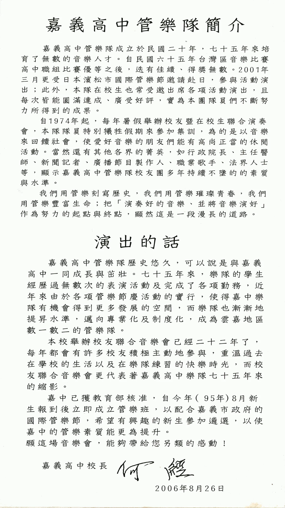
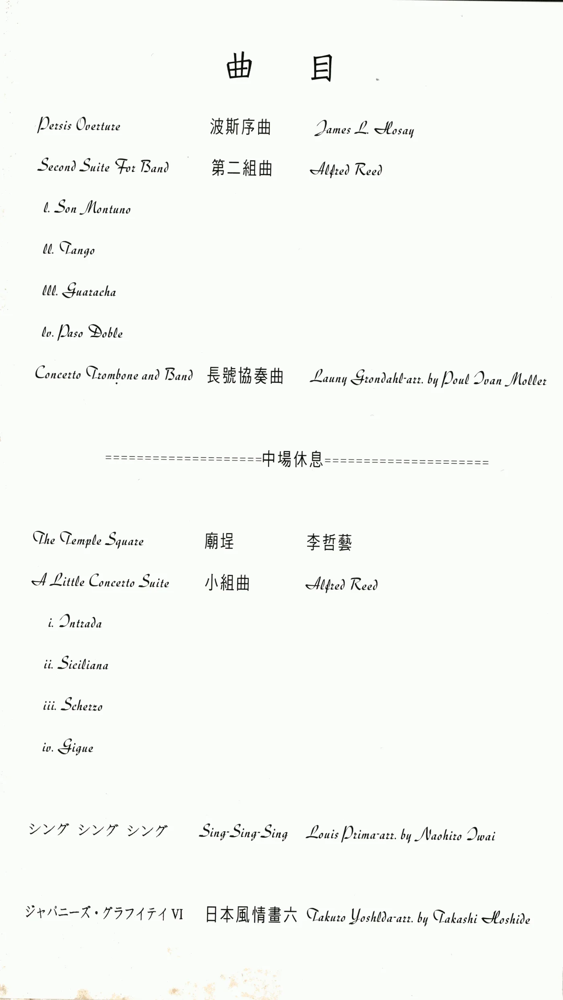
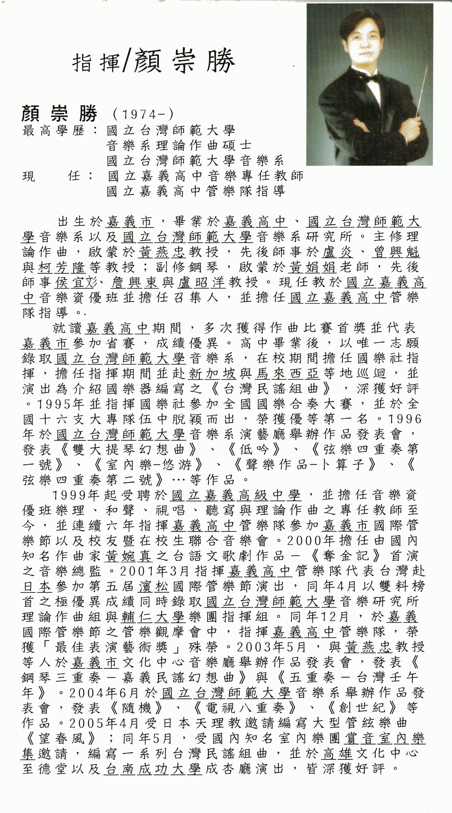
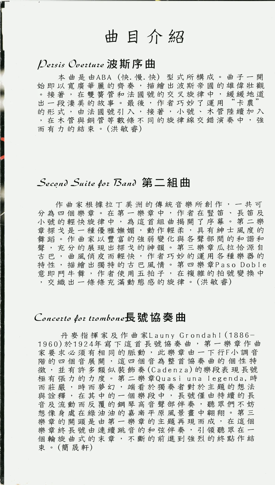
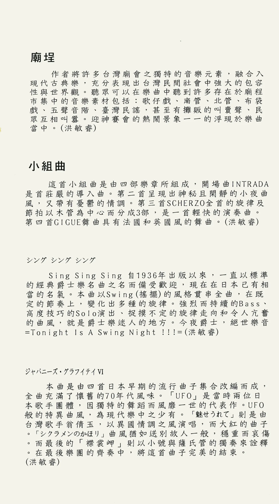
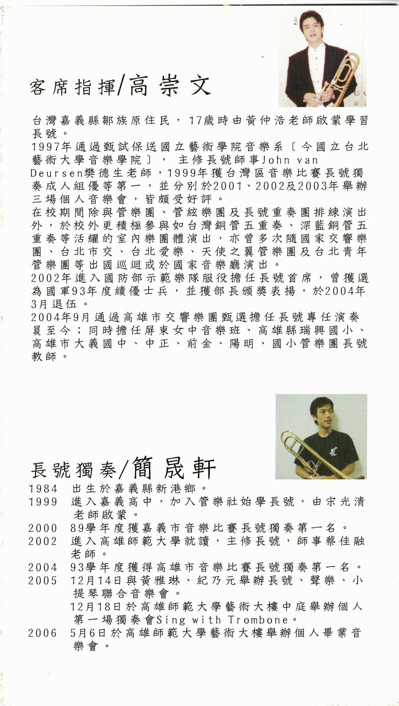
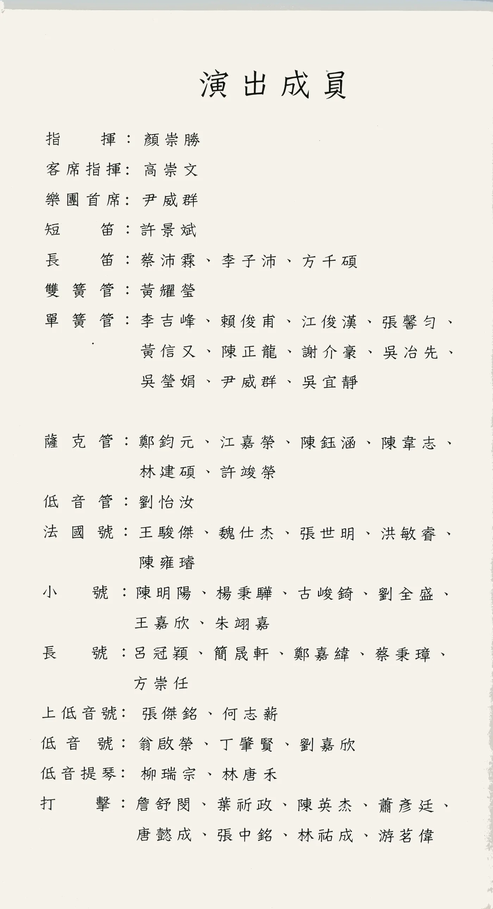
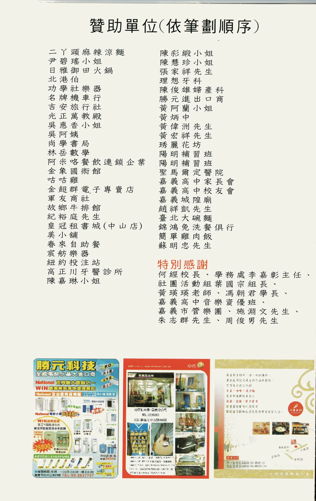
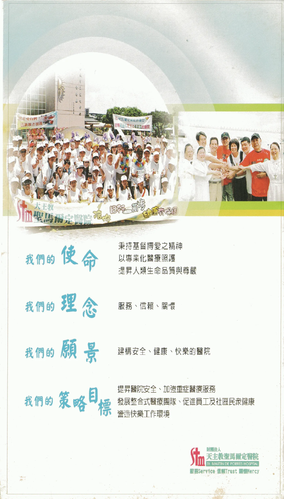

演出資訊
演出的話
嘉義高中管樂隊歷史悠久，可以說是與嘉義高中一同成長與茁壯。七十五年來，樂隊的學生經歷過無數次的表演活動及完成了各項勤務，近年來由於各項管樂節慶活動的實行，使得嘉中樂隊有機會得到更多發展的空間，而樂隊也漸漸地提昇水準，邁向專業化及制度化，成為雲嘉地區數一數二的管樂隊。
本校舉辦校友聯合音樂會已經二十二年了，每年都會有許多校友積極主動地參與，重溫過去在學校的生活以及在樂隊練習的快樂時光，而校友聯合音樂會更代表著嘉義高中樂隊七十五年來的縮影。
嘉中已獲教育部核准，自今年（95年）8月新生報到後立即成立管樂班，以配合嘉義市政府的國際管樂節，希望有興趣的新生參加遴選，以使嘉中的管樂素質能更為提升。
願這場音樂會，能夠帶給您另類的感動！
嘉義高中校長 何經
2006年8月26日
嘉義高中管樂隊簡介
嘉義高中管樂隊成立於民國二十年，七十五年來培育了無數的音樂人才。自民國六十五年台灣區音樂比賽高中職組比賽優等之後，迭有佳績、得獎無數。2001年三月更受日本濱松市國際管樂節邀請赴日，參與活動演出；此外，本隊在校生也常受邀出席各項活動演出，且每次皆能圓滿達成、廣受好評，實為本團隊員們不斷努力所得到的成果。
自1974年起，每年暑假舉辦校友暨在校生聯合演奏會，本隊隊員特別犧牲假期來參加集訓，為的是以音樂來回饋社會，使愛好音樂的朋友們能有高尚正當的休閒活動。當然還有其他各界的菁英，如行政院長、主任醫師、新聞記者、廣播節目製作人、職業歌手、法界人士等，顯示嘉義高中管樂隊校友團多年持續不墬的的素質與水準。
我們用管樂刻寫歷史，我們用管樂璀璨青春，我們用管樂豐富生命；把「演奏好的音樂、並將音樂演好」作為努力的起點與終點，顯然這是一段漫長的道路。
指揮與獨奏
曲目介紹
上半場
- 波斯序曲 Persis OvertureJames L. Hosay
本曲是由ABA（快、慢、快）型式所構成。曲子一開始即以寬廣華麗的齊奏，描繪出波斯帝國的雄偉壯觀。接著，在雙簧管和法國號的交叉旋律中，緩緩地道出一段淒美的故事。最後，作者巧妙了運用「卡農」的形式，由法國號引入，接著，小號、木管陸續加入，在木管與銅管等數條不同的旋律線交錯演奏中，強而有力的結束。（洪敏睿）
- 第二組曲 Second Suite For BandAlfred Reed／I. Son Montuno／II. Tango／III. Guaracha／IV. Paso Doble
作曲家根據拉丁美洲的傳統音樂所創作，一共可分為四個樂章。在第一樂章中，作者在豎笛、長笛及小號的輕快旋律中，為這首組曲揭開了序幕。第二樂章探戈是一種優雅嫵媚，動作輕柔，具有紳士風度的舞蹈，作曲家以豐富的強弱變化與各聲部間的和諧和聲，充分的展現出探戈的神韻。第三樂章瓜拉恰源自古巴，曲風俏皮而輕快，作者巧妙的運用各種樂器的特性，描繪出獨特的古巴風情。第四樂章Paso Doble意即鬥牛舞，作者使用五拍子，在複雜的拍號變換中，交織出一條條充滿動態感的旋律。（洪敏睿）
- 長號協奏曲 Concerto Trombone and BandLauny Grondahl／arr. by Paul Ivan Moller／獨奏：8861 簡晟軒（長號）
丹麥指揮家及作曲家Launy Grondahl（1886-1960）於1924年寫下這首長號協奏曲，第一樂章作曲家要求必須有相同的脈動，此樂章由一下行F小調音階的四個音展開，這四個音為整首協奏曲的個性特徵，並有許多類似裝飾奏（Cadenza）的樂段表現長號極有張力的力度。第二樂章Quasi una leggenda，時而莊嚴，時而夢幻，端看於獨奏者對於主題的想法與詮釋，在其中的一個樂段中，長號僅由持續的長音及流動而反覆的鋼琴高音聲部伴奏，聽眾們不妨想像身處在綠油油的嘉南平原風景畫中翱翔。第三樂章的開頭是由第一樂章的主題再現而成，在這個樂章終長號由連續跳音的和弦伴奏，引領聽眾在一個輪旋曲式的末章，不斷的前進到強烈的終點作結束。（簡晟軒）
下半場
- 廟埕 The Temple Square李哲藝
作者將許多台灣廟會之獨特的音樂元素，融合入現代古典樂，充分表現出台灣民間社會中強大的包容性與世界觀。聽眾可以在樂曲中聽到許多存在於廟程市集中的音樂素材包括：歌仔戲、南管、北管、布袋戲、五聲音階、臺灣民謠，甚至有攤販的叫賣聲、民眾互相叫囂。迎神賽會的熱鬧景象一一的浮現於樂曲當中。（洪敏睿）
- 小組曲 A Little Concerto SuiteAlfred Reed／i. Intrada／ii. Siciliana／iii. Scherzo／iv. Gigue
這首小組曲是由四部樂章所組成，開場曲INTRADA是首莊嚴的導入曲。第二首呈現出神秘且閑靜的小夜曲風，又帶有憂鬱的情調。第三首SCHERZO全首的旋律及節拍以木管為中心而分成3部，是一首輕快的演奏曲。第四首GIGUE舞曲具有法國和英國風的舞曲。（洪敏睿）
- シング シング シング Sing-Sing-SingLouis Prima／arr. by Naohiro Iwai
Sing Sing Sing 自1936年出版以來，一直以標準的經典爵士樂名曲之名而備受歡迎，現在在日本已有相當的名氣。本曲以Swing（搖擺）的風格貫串全曲，在既定的節奏上，變化出多種的旋律。強烈而持續的Bass、高度技巧的Solo演出、捉摸不定的旋律走向和令人亢奮的曲風，就是爵士樂迷人的地方。今夜爵士，絕世樂音=Tonight Is A Swing Night !!!=（洪敏睿）
- 日本風情畫六 ジャパニーズ・グラフィティ VITakuto Yoshida／arr. by Takashi Hoshide
本曲是由四首日本早期的流行曲子集合改編而成，全曲充滿了懷舊的70年代風味。「UFO」是當時兩位日本歌手團體，因獨特的舞蹈而風靡一世的代表作。UFO般的特異曲風，為現代樂中之少有。「魅せられて」則是由台灣歌手翁倩玉，以異國情調之風演唱，而大紅的曲子。「シクラメンのかほリ」曲風猶如送別故人一般，穩重而哀傷。而最後的「襟裳岬」則以小號與薩氏管的獨奏來詮釋。在最後樂團的齊奏中，將這首曲子完美的結束。（洪敏睿）
曲目順序、曲名、作曲／編曲者、各樂章與曲目介紹均依 2006 年正式節目冊原文呈現；節目冊以「中場休息」分為上下半場。
演出成員
| 聲部／角色 | 人員 |
|---|---|
| 指揮 | 顏崇勝 |
| 客席指揮 | 8301 高崇文 |
| 樂團首席 | 9301 尹威群 |
| 短笛 | 9001 許景斌 |
| 長笛 | 9311 蔡沛霖、9312 李子沛、9401 方千碩 |
| 雙簧管 | 8912 黃耀瑩 |
| 單簧管 | 7222 李吉峰、8521 賴俊甫、8603 江俊漢、張馨勻、8901 黃信又、8922 陳正龍、9101 謝介豪、吳治先、9122 吳瑩娟、9301 尹威群、9321 吳宜靜 |
| 薩克管 | 8431 鄭鈞元、8632 江嘉榮、8732 陳鈺涵、8832 陳韋志、9031 林建碩、9131 許竣榮 |
| 低音管 | 8711 劉怡汝 |
| 法國號 | 8141 王駿傑、8841 魏仕杰、9041 張世明、9302 洪敏睿、9402 陳雍璿 |
| 小號 | 8101 陳明陽、8401 楊秉驊、8601 古峻錡、8651 劉全盛、8952 王嘉欣、9351 朱翊嘉 |
| 長號 | 8761 呂冠穎、8861 簡晟軒、8961 鄭嘉緯、8962 蔡秉璋、9261 方崇任 |
| 上低音號 | 8171 張傑銘、何志新 |
| 低音號 | 7581 翁啟榮、8501 丁肇賢、9381 劉嘉欣 |
| 低音提琴 | 8254 柳瑞宗、8993 林唐禾 |
| 打擊 | 8692 詹舒閔、8791 葉祈政、8991 陳英杰、9192 蕭彥廷、9191 唐懿成、9391 張中銘、9392 林祐成、9491 游茗偉 |
演出成員姓名依節目冊原文呈現；校友編號經校友名錄比對後，僅為姓名唯一吻合者加註。
演出單位
| 職務 | 人員 |
|---|---|
| 主辦單位 | 國立嘉義高級中學 |
| 協辦單位 | 嘉義市文化局、嘉義市管樂團 |
| 演出單位 | 國立嘉義高中校友暨在校生聯合管樂團 |
| 特別贊助 | 城隍廟、光正萬教殿、財團法人天主教聖馬爾定醫院、嘉義高中校友會、嘉義高中家長會 |
贊助單位與特別感謝
贊助單位（依筆劃順序）
二丫頭麻辣涼麵、尹碧瑤小姐、日雅御田火鍋、北港伯、功學社樂器、名牌機車行、吉安旅行社、光正萬教殿、吳惠香小姐、吳阿姨、尚學書局、林岳數學、阿米咯餐飲連鎖企業、金象國術館、咕咕雞、金超群電子專賣店、軍友商社、故鄉牛排館、紀裕庭先生、皇冠租書城（中山店）、美小舖、春來自助餐、宸舫樂器、紐約投注站、高正川牙醫診所、陳嘉琳小姐、陳彩緞小姐、陳慧珍小姐、張家祥先生、理想牙科、陳俊雄婦產科、勝元進出口商、黃阿蘭小姐、黃炳中、黃偉洲先生、黃宏祥先生、琇麗花坊、陽明補習班、陽明補習班、聖馬爾定醫院、嘉義高中家長會、嘉義高中校友會、嘉義城隍廟、趙祥凱先生、臺北大碗麵、錦鴻免洗餐俱行、簡單雞肉飯、蘇明忠先生
特別感謝
何經校長、學務處李嘉彰主任、社團活動組葉國宗組長、黃瑛瑛老師、馮朝君學長、嘉義高中音樂資優班、嘉義市管樂團、施淵文先生、朱志群先生、周俊男先生
節目冊
原始節目冊共 10 張掃描檔；可左右滑動瀏覽，點開圖片後可用左右鍵切換頁面。









網站補充資訊
以上演出介紹、團隊簡介、人物介紹、曲目與解說、演出成員、贊助與致謝，均按 2006 年紙本節目冊原文轉錄；僅移除紙本分行並調整網站顯示空格，未以今日狀態改寫。
節目冊曲目頁印作「Concerto Trombone and Band」，曲目介紹頁印作「Concerto for trombone」；網站曲目標題依曲目頁呈現，介紹則保留介紹頁原文。
節目冊原文保留「不墬的的」、「巧妙了運用」、「廟程市集中」、「活耀的室內樂團體」、「Takuto Yoshida」與「シクラメンのかほリ」等當年印刷文字，不逕行改寫。
節目冊所列「嘉義市文化中心音樂廳」，現為嘉義市政府文化局音樂廳。